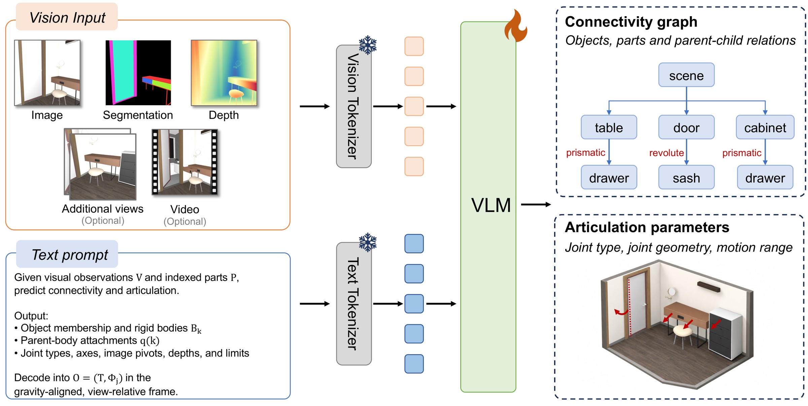
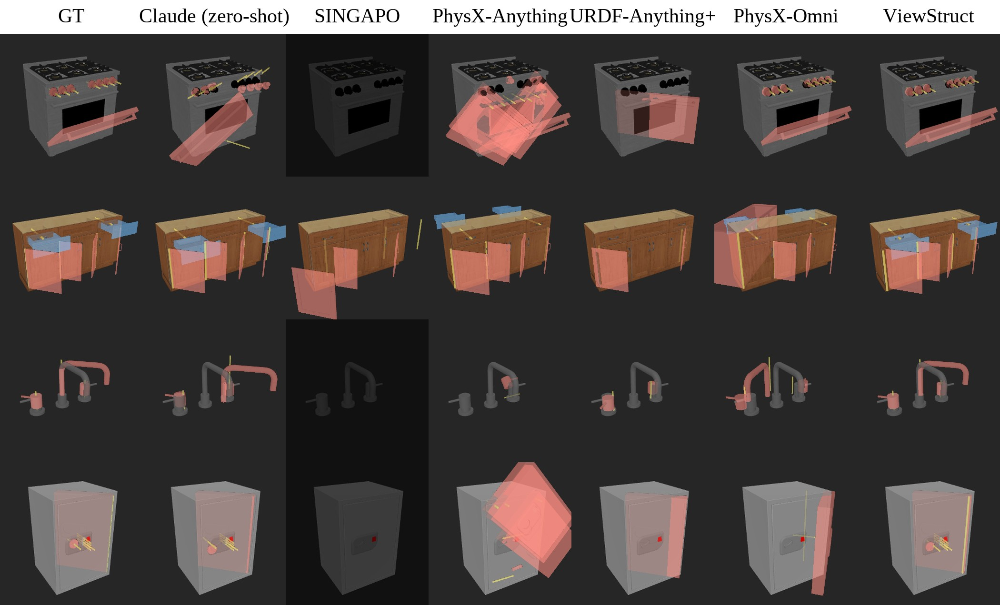
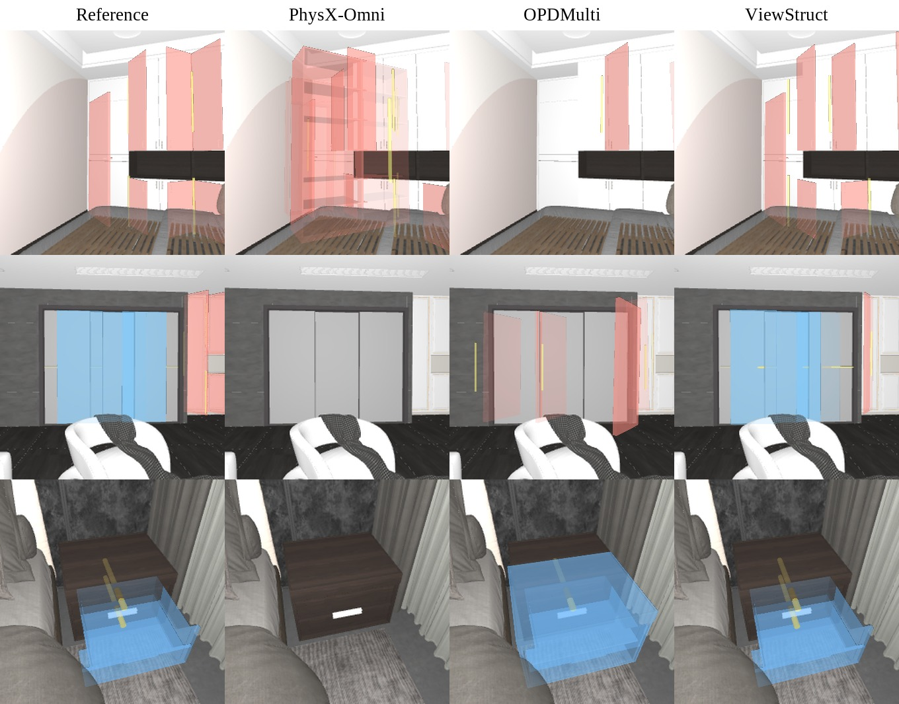
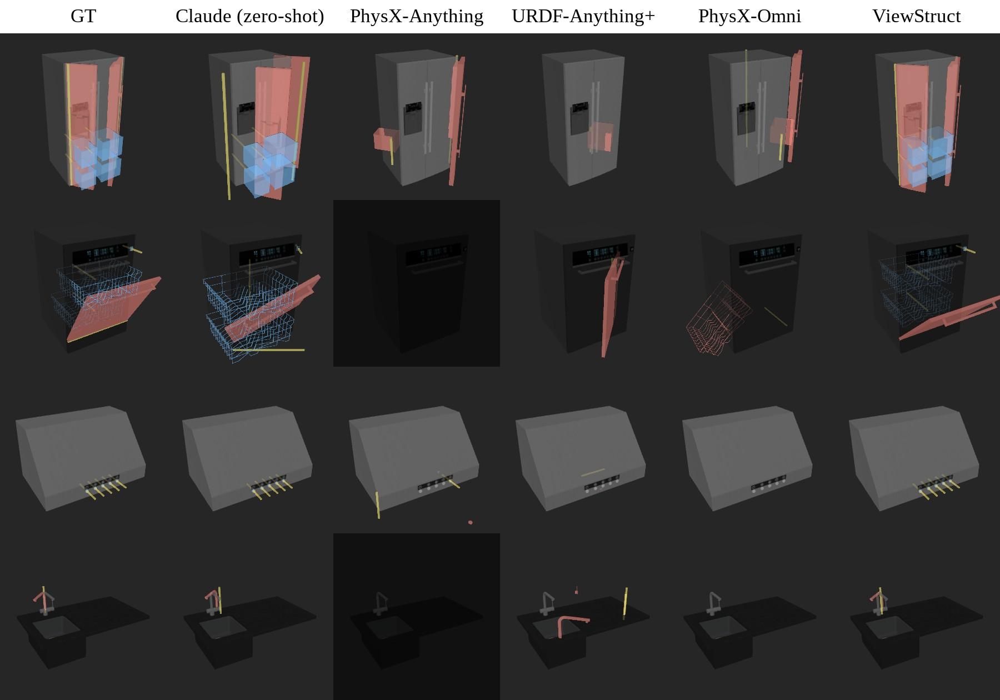
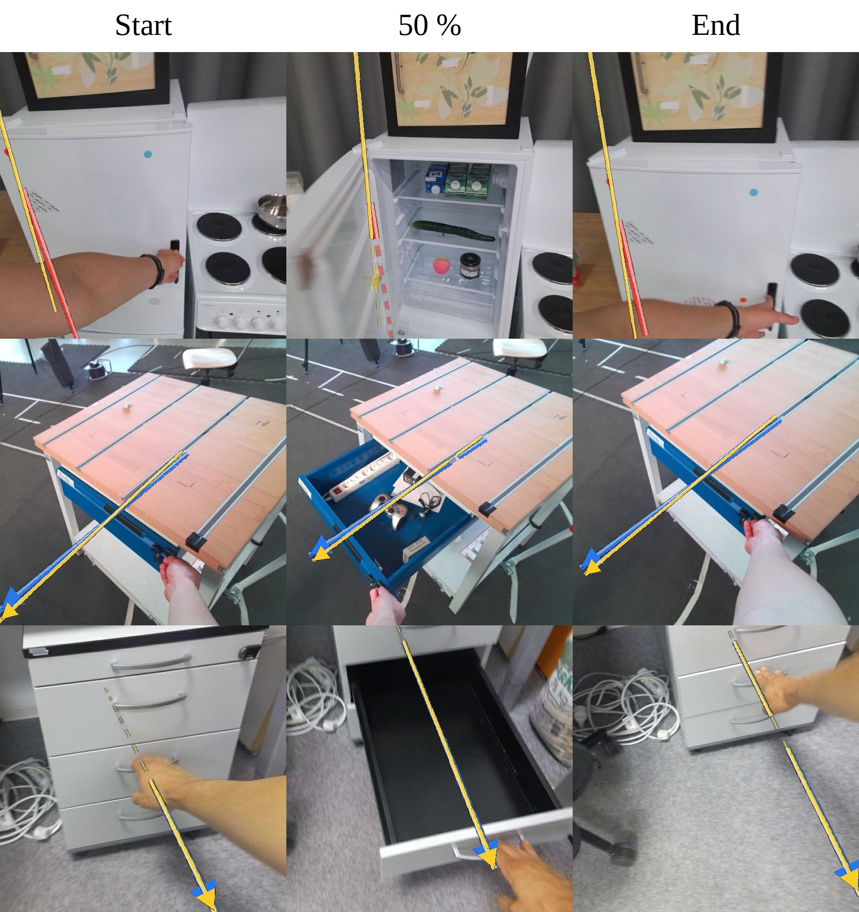
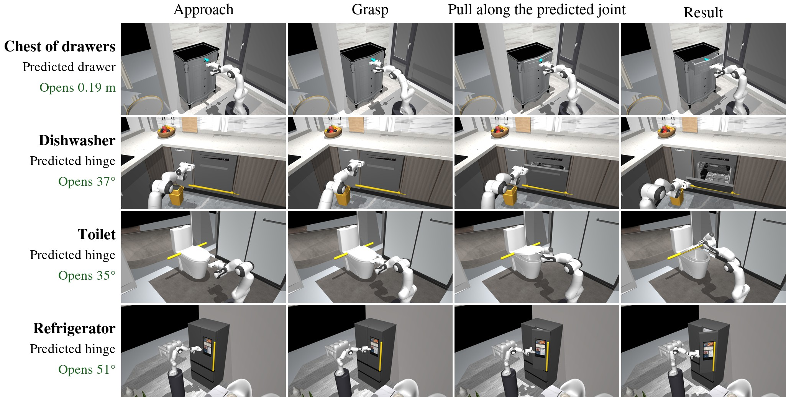
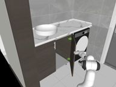

TL;DR ViewStruct predicts how parts connect and move in objects and scenes from segmented RGB-D observations in seconds. A single static observation is sufficient, while additional motion observations can improve its predictions. Its predictions are view-grounded, with joint parameters expressed in the input view’s coordinate frame.
An RGB image with part masks and depth, plus optional extra views or a clip. The prompt lists each part with its id, box and depth range.
Qwen3-VL-4B, fine-tuned to write the structure out token by token. No per-instance optimisation, no refinement loop.
Which parts form rigid bodies, how the bodies attach, and the parameters of every joint.

ProblemCanonical orientations can be ambiguous for unfamiliar or symmetric objects and differ across objects in a scene.
What we doJoints are expressed in a frame built from what is visible: the origin and unit come from the object's silhouette and median depth, z points against gravity and x is the viewing direction projected onto the floor. No category-specific front is needed, and camera pitch and roll drop out, so vertical hinges and horizontal slides keep simple directions. Gravity comes from the renderer or the device pose. In a scene, one reference object defines the frame and all objects share it.
ProblemSeparate regions can belong to one rigid body. Predicting a parent for each region introduces arbitrary internal hierarchies.
What we doThe output is a static base plus one moving body per joint. Each body names the regions that move together, the body it hangs from, and its joint: type, axis, pivot and motion limits. Bodies can attach to other moving bodies, so nested mechanisms are covered. A fixed convention then expands this into the part-level parent map, and targets come out a third shorter than a per-part tree.
ProblemDirect 3D pivot prediction does not enforce correspondence with a location in the input image.
What we doEach hinge pivot is written as a point in the image plus a depth offset from the frame centre, and the 3D pivot is recovered by back-projection. The model can point at the hinged edge it sees, and the pivot is guaranteed to project back onto that point. Axis directions are predicted directly in 3D, since their image projections can be degenerate.
We convert annotated assets into a common target for objects and scenes, with consistent coordinates, units, and rigid-body groupings. Persistent part IDs link image regions to geometry.
Static views provide appearance and spatial cues; articulation clips reveal relative motion. Both supervise the same structure, with varied viewpoints exposing different appearances and visibility patterns.
We split parts or merge compatible sibling regions, then update the part inventory and re-render the segmentation. The kinematics stay unchanged, encouraging robustness to different part decompositions.

| Method | Parent | Edge F1 | Joint F1 | Type | Axis | Pivot ↓ | Range | Success, matched | Success, all joints | Success, objects | Time (s) ↓ |
|---|---|---|---|---|---|---|---|---|---|---|---|
| Qwen3-VL-4B, zero-shot | 19.2 | 19.9 | 31.5 | 66.0 | 41.2 | 0.391 | 30.5 | 1.1 | 0.2 | 1.0 | – |
| PhysX-Anything | 61.0 | 67.9 | 85.9 | 96.2 | 94.4 | 0.118 | 26.3 | 81.6 | 64.3 | 40.2 | 267 |
| PhysX-Omni | 70.1 | 73.6 | 85.9 | 97.8 | 95.8 | 0.096 | 26.5 | 85.3 | 66.6 | 38.9 | 241 |
| URDF-Anything+ | 17.3 | 14.7 | 18.6 | 73.0 | 58.5 | 0.269 | 34.1 | 14.0 | 1.5 | 2.3 | 64 |
| ViewStruct | 92.3 | 92.7 | 96.8 | 96.6 | 89.9 | 0.084 | 72.3 | 81.5 | 78.2 | 52.5 | 6.5 |
| ViewStruct, depth estimated by MoGe | 92.3 | 91.0 | 96.5 | 95.6 | 89.3 | 0.094 | 69.1 | 78.3 | 74.8 | 48.7 | 6.5 |
Values are percentages, except pivot error in normalised asset units and time in seconds. Object success requires every reference joint to be recovered correctly. Generated parts are matched to reference parts by geometry.

| Method | Parse | Recall | Joint F1 | Type | Axis | Pivot ↓ | Range | Success, matched | Success, all joints |
|---|---|---|---|---|---|---|---|---|---|
| OPDMulti | 100.0 | 15.7 | 25.8 | 73.9 | 49.4 | 0.440 | 50.0 | 11.8 | 1.8 |
| PhysX-Omni | 100.0 | 30.3 | 40.4 | 66.7 | 49.7 | 0.400 | 8.1 | 24.4 | 7.4 |
| ViewStruct | 98.9 | 94.7 | 95.2 | 77.6 | 62.1 | 0.331 | 72.2 | 26.2 | 24.8 |
| + 2 views with parts moved | 97.7 | 94.8 | 95.2 | 80.5 | 64.4 | 0.337 | 74.1 | 28.0 | 26.6 |
ViewStruct is trained on scene observations, and test views can contain training objects as neighbours. This evaluates scene prediction, not transfer to entirely unseen scenes. All-joint success includes missed joints as failures.

| Method | Joint F1 | Type | Axis | Pivot ↓ | Range | Success, matched | Success, all joints |
|---|---|---|---|---|---|---|---|
| SimReady objects (242) | |||||||
| Qwen3-VL-4B, zero-shot | 17.9 | 46.7 | 39.3 | 0.382 | 24.6 | 0.0 | 0.0 |
| PhysX-Anything | 61.3 | 62.0 | 48.7 | 0.327 | 15.9 | 14.9 | 6.9 |
| URDF-Anything+ | 33.0 | 65.7 | 52.1 | 0.239 | 31.1 | 2.8 | 0.6 |
| PhysX-Omni | 61.1 | 62.8 | 52.6 | 0.380 | 18.1 | 18.0 | 8.2 |
| ViewStruct | 95.0 | 75.0 | 67.1 | 0.115 | 31.5 | 33.3 | 31.5 |
| GRScenes objects, held-out categories (291) | |||||||
| Qwen3-VL-4B, zero-shot | 43.4 | 33.7 | 25.6 | 0.229 | 22.6 | 0.0 | 0.0 |
| PhysX-Anything | 52.5 | 61.1 | 29.9 | 0.432 | 13.8 | 8.9 | 3.3 |
| URDF-Anything+ | 26.6 | 37.6 | 25.6 | 0.386 | 28.7 | 0.8 | 0.1 |
| PhysX-Omni | 48.0 | 54.8 | 21.4 | 0.494 | 5.7 | 16.0 | 5.2 |
| ViewStruct | 99.7 | 71.8 | 48.7 | 0.226 | 56.9 | 48.7 | 48.5 |
SimReady is an unseen asset source, although its categories can overlap training sources. The GRScenes categories are excluded from its training partition. Joint F1 measures which parts carry joints; articulation success also tests their parameters.
Despite training only on synthetic data, the model transfers to real videos. Adding motion evidence improves hinge-type accuracy from 77.2% to 93.0%.

| Method | Visual input | Type acc. prism. | Type acc. revol. | Axis err. prism. ↓ | Axis err. revol. ↓ | Hinge pos. (m) ↓ | n |
|---|---|---|---|---|---|---|---|
| ArtiPoint | Full RGB-D sequence | 75.3 | 97.3 | 20.5° (4.4°) | 20.9° (10.3°) | 0.19 (0.12) | 338 |
| OPDMulti | Initial RGB only | 52.2 | 72.0 | 44.3° (32.5°) | 42.8° (30.9°) | 0.42 (0.37) | 307 |
| ViewStruct | Initial RGB-D only | 69.3 | 77.2 | 36.7° (17.0°) | 37.6° (4.0°) | 0.31 (0.22) | 342 |
| ViewStruct | Initial RGB-D + 2 frames | 81.5 | 91.2 | 27.3° (14.2°) | 27.0° (1.8°) | 0.27 (0.18) | 341 |
| ViewStruct | Initial RGB-D + 2 frames + clip | 86.0 | 93.0 | 28.6° (15.8°) | 21.3° (1.6°) | 0.23 (0.18) | 342 |
ArtiPoint receives the full RGB-D sequence, temporal camera poses, and reference interaction cues. ViewStruct receives an initial RGB-D observation and the listed RGB frames or clip, without temporal camera poses. Errors are means with medians in parentheses; n is the number of scored interactions.
The predicted joints also define opening trajectories. A simulated gripper opens 74.6% of reference joints, increasing to 80.3% with one direction-reversal retry.

| Joints from | Attempted | Opens | Opens, one retry in the other direction |
|---|---|---|---|
| Reference (oracle) | 100.0 | 99.9 | 99.9 |
| PhysX-Anything | 57.2 | 50.3 | 52.3 |
| URDF-Anything+ | 11.3 | 4.4 | 4.9 |
| PhysX-Omni | 56.5 | 48.9 | 51.2 |
| ViewStruct | 91.3 | 74.6 | 80.3 |
Missing predictions count as failures. We supply contact locations and simplify the physics to isolate articulation quality. These trials do not test grasp discovery or real-robot performance.
Here the Panda follows a predicted joint trajectory, while the object retains its reference mechanism. Errors in the prediction can prevent the part from opening.
Recorded MuJoCo runs. Yellow: predicted joint. Teal: reference joint. The controls replay existing trajectories.

Home 1 · hinge joint
@article{bian2026viewstruct,
title = {ViewStruct: View-Grounded Articulation and Connectivity Inference},
author = {Bian, Wenjing and Huang, Ranran and Geiger, Andreas},
journal = {arXiv preprint},
year = {2026}
}